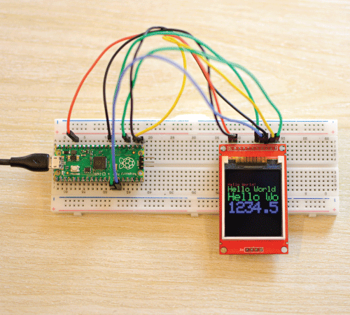

Senior Research Engineer • 19+ Years Professional Experience • Hardware R&D Expert
Specialized in electronic product development, embedded systems, custom PCB design, and industrial hardware prototyping. Over nearly two decades (since July 15, 2007), I have successfully turned advanced technical concepts into 150+ functional, production-ready commercial hardware products.
• B.Sc. in Electrical and Electronics Engineering (Prime University)
• Diploma in Electrical Technology (Mirpur Institute of Science and Technology - MIST)
Embedded Systems, Hardware R&D, Microcontroller Training, Industrial Automation Prototyping, and Precision Laboratory Equipment Inspection.
Developing a real-time multi-person edge AI detection system powered by Raspberry Pi 5, Raspberry Pi AI HAT+ with 26 TOPS Hailo-8 acceleration, and Pi Camera Module 3 Noir.
Contributed as a core technical expert under BUET IICT for national and municipal EVM deployments, ensuring secure and reliable electronic balloting hardware.
Engineered reliable embedded hardware modules and metering solutions for automated utility tracking including prepaid electricity and gas meters.
Designed and built robust control circuits and industrial automation prototypes for remote agricultural solar-powered irrigation units.

A comprehensive MicroPython guide on interfacing a 1.8-inch SPI TFT graphic display (ST7735 driver) with a Raspberry Pi Pico. Utilizing just five SPI GPIO pins, this project enables smooth rendering of custom text, graphics, and animations. Includes full wiring schematics, library installation steps, and Thonny IDE setup for rapid embedded prototyping.
Key Components: Raspberry Pi Pico, 1.8-inch TFT LCD (ST7735), Breadboard, Jumper Wires.
Interested in discussing hardware design, embedded systems, training collaborations, or research? Feel free to reach out.
Send An Email